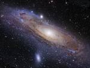

Astronomy
Astronomy is the scientific study of celestial objects (such as
stars, planets, comets, and galaxies) and phenomena that originate outside the Earth's atmosphere (such as the cosmic background radiation). It is concerned with the evolution, physics, chemistry, meteorology, and motion of celestial objects, as well as the formation and development of the universe.
Astronomy is one of the oldest sciences. Since very early times man has been fascinated by celestial phenomena like the rising and setting of the sun, the phases of the moon and the movements of the sun and the planets. Astronomers of early civilizations performed methodical observations of the night sky, and astronomical artifacts have been found from much earlier periods. However, the invention of the telescope was required before astronomy was able to develop into a modern science.
The Babylonians were the first to start off in this field followed by the Greek and the Arabs, and finally the Europeans. Famous names in the history of the astronomy are (among others) Ptolemaeus (ca. 100-170 A.D.) and Copernicus (early 16th century). In the 16 and 17th century the people started to realize that the Sun and not the Earth was the centre of the Universe. In 1609 Galileo Galilei aligned the first telescope to the sky. He discovered for instance the craters on the moon. Johannes Kepler defined the principle of the orbits of the planets (1615). Sir Isaac Newton discovered the laws of gravity and the reflecting telescope. The Dutchman Christiaan Huygens (end of the 17th century) was the first to study the rings of the planet Saturn.
It was only at the beginning of the 20th century when they discovered that the sun is an ordinary star in a galaxy. Nowadays people are able to observe the universe with the help of telescopes, radiotelescopes and other instruments for this purpose. The developments in the field of space travel have contributed to the possibility of making observervations far away from the Earth.
Since the 20th century, the field of professional astronomy split into observational and theoretical branches. Observational astronomy is focused on acquiring and analyzing data, mainly using basic principles of physics. Theoretical astronomy is oriented towards the development of computer or analytical models to describe astronomical objects and phenomena. The two fields complement each other, with theoretical astronomy seeking to explain the observational results, and observations being used to confirm theoretical results.
Historically, amateur astronomers have contributed to many important astronomical discoveries, and astronomy is one of the few sciences where amateurs can still play an active role, especially in the discovery and observation of transient phenomena.